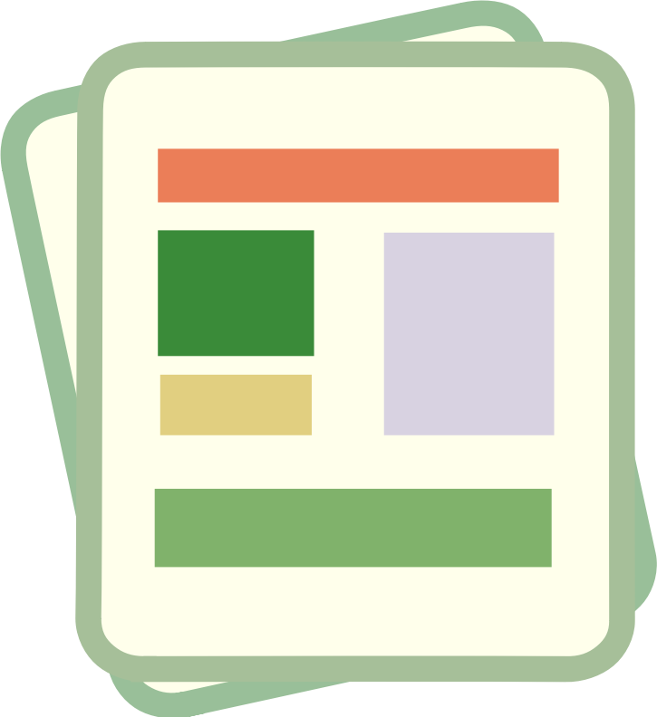
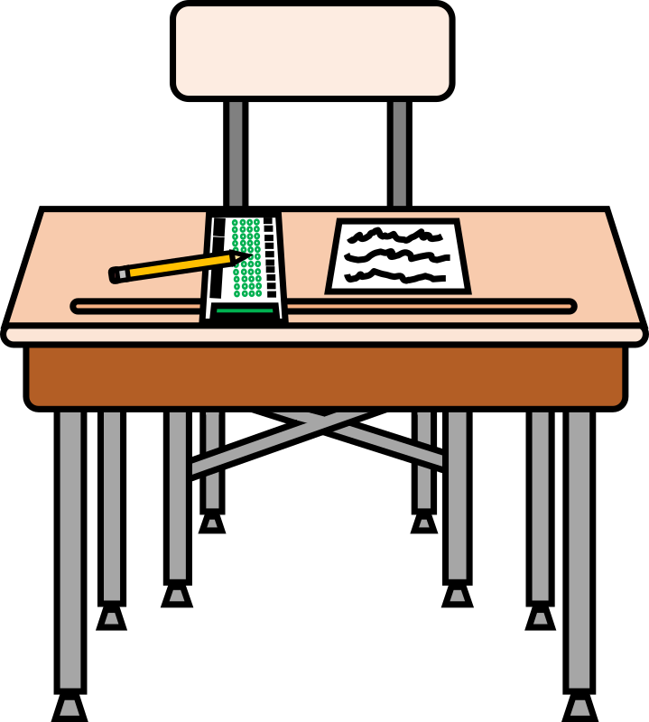
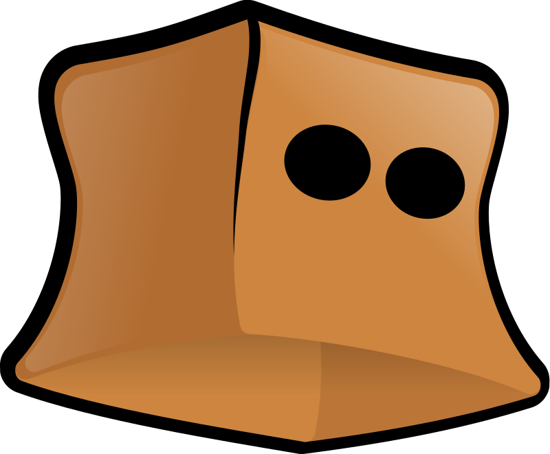
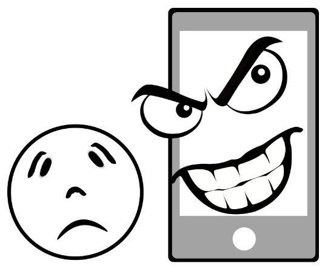
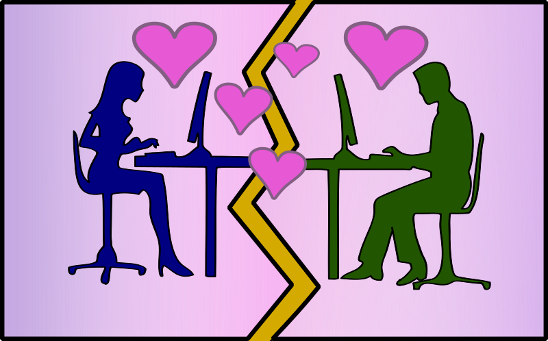
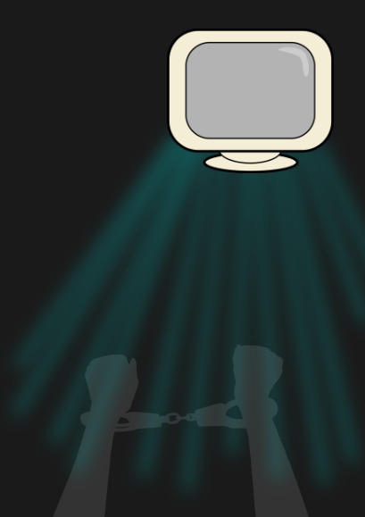

Es un tipo de folleto que tiene dos dobleces que divide la hoja en tres secciones en las que se puede agregar información, imágenes o una combinación de ambos.
Ejemplo
He leído el tríptico con la información sobre la matrícula.
¿Qué tal? Ya has empezado, espero que tengas ganas de seguir porque vienen cosas muy interesantes.
Tienes por delante un reto de gran importancia y ya va siendo hora de que empieces a centrarte en él.
Para ello te propongo que vayas viendo algunas cuestiones previas relacionadas con la ciberseguridad, las amenazas que suponen las redes sociales y algo sobre los derechos de autor y las licencias de uso.
La guía que tienes que preparar trata sobre todos esos apartados, por tanto, te vendrá muy bien tomar contacto con ellos cuanto antes.
No te preocupes si crees que aún no estás preparado, tan solo es una forma de que te des cuenta de lo que hay que aprender, así que ¡a trabajar!
1. Tengo miedo

Colocaros en grupos de alrededor de 4 personas.
Cread, en conjunto, un documento compartido en el que pongáis qué amenazas de Internet creéis que es más probable que os puedan afectar y qué efectos podrían tener para vuestra seguridad.
En ese documento podéis expresar vuestra propuesta de la forma que creáis más conveniente:
En forma de tabla.
Mediante un esquema.
Un simple texto.
Usar dibujos solos o complementados con texto.
O como se os ocurra.
2. Identifico lo que tengo que hacer
Ya conoces qué reto te proponemos alcanzar y te acabamos de plantear una actividad que te acercará a la meta. Pero para tener éxito en tu camino, necesitarás algunas estrategias que te servirán para esta y otras tareas parecidas.
¡Te proponemos que abras tu Diario de Aprendizaje y completes el PASO 1 (Identifico lo que tengo que hacer) antes de empezar la actividad que acabas de leer!
3. ¿Seré capaz de hacer la actividad?
¡Ya has empezado la actividad, “Tengo miedo”! Cuando empezamos algo que no habíamos hecho antes podemos sentir algo de miedo e inseguridad, esto es algo muy normal.
Si completas el PASO 2 (¿Seré capaz de hacerlo?) del Diario de aprendizaje, podrás comprobar que solo con reflexionar sobre esto te ayudará a relajarte, a continuar con la actividad y completarla con éxito. También conseguirás sentir menos inseguridad cuando tengas que realizar las próximas actividades.
Recuerda:
Pregunta a tu profesor o profesora si lo vas a rellenar en papel o en el ordenador.
Si lo rellenas en el ordenador, no te olvides de guardarlo en una carpeta que más tarde puedas localizar.
¡Ánimo, que lo harás genial!
4. Hoy toca examen

En el siguiente enlace puedes encontrar varios tests sobre ciberseguridad.
Haz los que creas más apropiados y evalúa cuáles son tus conocimientos previos sobre este tema.
En tu cuaderno, escribe las conclusiones a las que has llegado tras ver en qué has fallado y detalla qué se te ocurre que podrías hacer para mejorar.
5. ¡Vamos! Al recreo
Ahora toca jugar un rato.
Puedes hacerlo desde el ordenador o con tu móvil o tablet.
El juego se llama la "Torre del tesoro" y lo puedes localizar con el criterio de búsqueda "beinternetawesome". Es bastante sencillo, pero va a ser útil para concienciarte de la importancia de la seguridad de tus datos y del uso de contraseñas apropiadas.
Por tanto, accede al siguiente enlace y juega hasta que llegues al final, no te llevará mucho tiempo.
Después de terminar, escribe en tu cuaderno qué conclusiones puedes sacar de lo que has hecho.
6. Me busco a ver si me encuentro
Porneros en pareja para ayudaros mutuamente.
Internet contiene muchísima información de todo tipo accesible libremente. Es posible que también tenga algo referido a ti.
Compruébalo tratando de localizar todos los datos que encuentres sobre ti en la Red.
Una vez que los tengas, escribe lo siguiente:
Si te gusta y estás de acuerdo con la imagen que proyecta de ti y el porqué.
Tu opinión acerca de la importancia que crees tienen.
Quién podría tener interés en ellos.
Si están suficientemente actualizados.
Si en un futuro te gustaría que siguieran disponibles.
Lumen dice ¿Sabes qué hacer?
Hablar de datos o información puede ser algo difícil de concretar. Si no sabes muy bien qué y cómo buscar, te puedo dar algunas pistas.
Para hacer la búsqueda puedes comenzar introduciendo como criterio tu nombre y apellidos entre comillas.
En cuanto a la información que podrás obtener habrá imágenes, vídeos, publicaciones o textos, incluyendo opiniones, comentarios y listados.
También es interesante que te ayudes de tu pareja para intentar ver si puede acceder a la información de tus redes de forma externa, sin que entres directamente con tu cuenta.
7. Ese no puedo ser yo

En pareja vais a pensar en lo siguiente:
Cuántas formas se os ocurren para ser suplantados en la Red.
Qué consecuencias podría tener este tipo de actos en vuestras vidas.
Cómo se podría actuar en esos casos.
Si conocéis algún caso preparaos para contarlo.
Cuando hayáis terminado de organizar vuestras ideas, vais a debatir con el resto de la clase vuestras conclusiones para ver qué ideas surgen de la interacción con el grupo. Tomad nota de aquello que creáis que es más interesante.
¿Necesitas ayuda para tomar notas?
Conoce la guía para la competencia de aprender a aprender donde encontrarás una ayuda para tomar notas. Es una herramienta que te ayudará a poder realizar este ejercicio. Aquí tienes el enlace al apartado de la guía "Hago mis anotaciones".
8. ¿Esto de qué va?

Reuniros en grupos de al menos 5 personas.
Contad casos que penséis que puedan ser ejemplos de un acoso a través de las redes y centraros en los siguientes aspectos:
¿Por qué creéis que se trata de un acoso y no de otra situación?
En vuestra opinión ¿Se pueden establecer distintos tipos de acoso en la Red?
¿Qué tienen en común?
¿Qué consecuencias pueden tener para las personas involucradas?
¿Cómo creéis que se puede evitar?
Cuando hayáis contestado a estas preguntas entre vosotros, presentad conclusiones de forma resumida mediante un documento escrito (redacción, mural, tarjetas, tríptico, diapositivas...) o gráfico (historia, comic, vídeo...). Podéis hacerlo tanto en en papel como en soporte digital, según creáis conveniente.
Definición
Es un tipo de folleto que tiene dos dobleces que divide la hoja en tres secciones en las que se puede agregar información, imágenes o una combinación de ambos.
Ejemplo
He leído el tríptico con la información sobre la matrícula.
Motus dice ¡Perfecto!
Trabajar en grupo no solo es una ayuda si no que también aporta recursos adicionales a la hora de hacer cualquier cosa. Mejor acompañado porque todo compartido queda mejor.
Cuando trabajas en grupo aprendes también en equipo. Hay quien está pendiente de los detalles para que nada se olvide, hay quien sabe expresarse muy bien, hay quien tiene muchas habilidades, o dibujan estupendamente…
Cada cual tiene superpoderes muy útiles para trabajar. Por separado son muy útiles e incluso destacan puntualmente, pero cuando se unen, aparece su máximo efecto y ya nada parece imposible. De esta forma no solo aprendes si no que tienes la garantía de conseguir resolver cualquier desafío.
La unión hace la fuerza y por eso es importante que en tu equipo sigáis estos consejos:
Todo lo que una persona sabe lo comparte con los demás.
Colaboramos en las tareas para que el equipo funcione.
Valoramos los superpoderes de cada persona.
Respetamos lo que cada persona ofrece al equipo.
¡Aprendiendo en grupo se puede conseguir más!
9. ¡Qué bonito es el amor!

Colaborando en pequeños grupos, valorad por escrito qué opinión tenéis acerca de los siguientes comentarios de una relación de pareja que se reflejan en las siguientes frases.
Posteriormente podéis pornerlas en común en un debate con toda la clase.
Frase 1
Te quiero tanto que no me gustaría compartirte con nadie.
Quiero que siempre estemos juntos, no nos hace falta nadie más, ni amistades ni familia.
Frase 2
Deberías cambiar tu foto de perfil porque me parece un poco atrevida y otra gente podría llamarle la atención y despertar mis celos.
Frase 3
Si de verdad me quieres, dame las contraseñas de tus cuentas en las redes. Nuestra relación debe estar basada en una confianza mutua.
Frase 4
Si es verdad que anoche no saliste demuéstralo, vamos a verlo en el historial de ubicaciones.
Frase 5
Tienes mucha gente siguiéndote de la que no me fío ni un pelo. Deberías cortar y no volver a mandarles ningún tipo de mensaje. Plantéate borrarte la cuenta. Estaremos mejor y tendremos más tranquilidad.
Frase 6
¿No te parece que las fotos que estás compartiendo son un poco atrevidas?
Frase 7
¿Me puedes explicar por qué esa persona te da tantos likes?
Frase 8
Los comentarios que estás compartiendo despiertan mis celos.
Frase 9
Me quieres explicar qué hacías ayer a las cuatro de la mañana. He visto lo que has escrito.
Frase 10
Oye ¿Por qué sigues a esta persona? Me lo puedes explicar, no me gusta nada.
Frase 11
Si no tienes nada que ocultar enséñame el móvil.
Frase 12
Seguro que estás con tus amistades donde dices, pero mándame una foto a ver.
10. Estoy atrapado

En pareja contestad a las siguientes preguntas:
¿Qué es ser adicto a algo?
¿Se puede ser adicto a Internet? ¿Cómo?
¿Cuáles crees que son los síntomas que indican que una persona tiene un problema de dependencia de Internet, las Redes o el móvil?
¿Cuáles crees que son las causas de que aumente este problema cada día?
¿Qué consecuencias puede tener para un adolescente este tipo de adicción?
¿Tiene solución? ¿Cuál?
¿Crees que es fácil desengancharse? ¿Por qué?
11. Demuestra cómo se comporta una persona
Cread un documento de texto colaborativo para toda la clase.
Seguidamente participad en él para aportar ejemplos de mal comportamiento de algunas personas a la hora de relacionarse a través de la Red y acompañadlos de las normas que creéis que contribuirían a evitarlos.
Seguidamente ya en parejas, pensad un poco en el resultado obtenido y poned en otro documento vuestra reflexión personal sobre las siguientes cuestiones:
¿Cómo valoráis el resultado obtenido?
¿Cuáles son las razones de que haya quedado así?
¿Cómo creéis que se podría haber mejorado el resultado obtenido?
¿Creéis que hay gente que se comporta en las redes de forma diferente a como lo hace en persona? ¿Por qué?
¿Qué consecuencias pueden llegar a tener este tipo de comportamientos?
¿Qué medidas habría que tomar para evitar estas situaciones?
12. Esto es nuestro y lo compartimos
Seguimos con el trabajo en pareja.
Buscad la licencia de este recurso que estáis utilizando y la de uno de vuestros libros de texto.
Localizad también en Internet otros cinco documentos y tratad de comparar sus licencias con las anteriores.
Después contestad a las siguientes preguntas:
¿Habéis conseguido localizar todas las licencias? ¿Por qué?
¿Qué podéis hacer para conocer las características de cada licencia?
¿Sabéis qué tipos de licencias hay y en qué se diferencian?
¿Hay alguna licencia más recomendable que las demás? ¿Por qué?
¿En qué se diferencian las licencias que habéis encontrado?
¿Para qué creéis que sirven las licencias?
¿Pensáis que hoy por hoy son necesarias las licencias? ¿Por qué?
¿Se os ocurre algún tipo de licencia que debiera existir? Describe sus condiciones